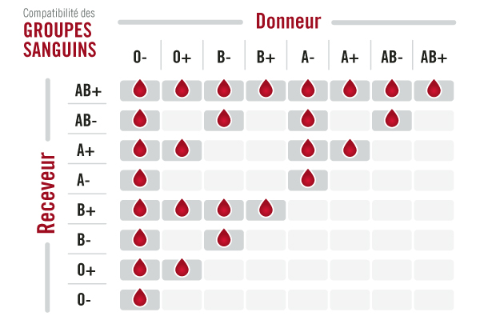
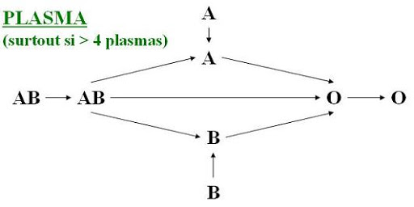

Bienvenue Sur Medical Education
L'acte transfusionnel
La demande d'examen immuno-hematologique
La prescription medicale
Les examens
Le prelevement
La commande de produits sanguins labiles
Les produits sanguins labiles
L’ordonnance de produits sanguins labiles
La reception des produits sanguins labiles
Des l’arrivee d’un produit sanguin labile, il faut imperativement verifier :
La preparation
- Le materiel necessaire :
- Le produit sanguin labile a transfuser.
- Le dispositif de transfusion specifique muni d’un filtre et d’un perforateur.
- Le dispositif de contrele ultime.
- Le patient :
- Le patient est informe sur les modalites de la transfusion.
- L’etat initial du patient (pouls, tension arterielle, temperature).
- Une voie veineuse est reservee a la transfusion du produit sanguin labile.
- Nouvelle verification attentive des documents :
- Verification de l’identite du receveur decline par lui-meme et sa concordance les documents nominatifs.
- Concordance du groupe sanguin mentionne sur le document de groupage, la fiche de distribution et l’etiquette du produit.
- Concordance des donnees d’identification du produit portees sur l’etiquette et sur la fiche de distribution (type de produit, numero d’identification a 11 chiffres).
- Date de peremption du produit.
- Conformite des regles transfusionnelles specifique au patient.
Le Contrele Pre-transfusionnel Ultime : CPU
Le Contrele Pre-transfusionnel Ultime est le dernier contrele de securite avant l’administration du concentre de globules rouges, pour la prevention des accidents par incompatibilite ABO.
C’est la realisation d’une reaction de Beth-Vincent sur le sang du malade et sur les globules rouges de la poche. L’objectif est de verifier, immediatement avant la transfusion, la concordance des reactions d’agglutination du sang du patient et du sang de la poche.
Il comporte 2 etapes :
- Procedure de CPU :
- Identifier le carton pre-transfusionnel : nom, prenom, date de naissance.
- Coller ou noter le numero du produit a tester.
- Indiquer le nom de la personne effectuant le contrele, la date, l’heure.
- Deposer une goutte de sang du patient dans la case "receveur".
- Deposer une goutte de sang de la poche dans la case "donneur".
- Deposer une goutte de serum physiologique sur chaque case de reactif : anti-A, anti-B (Anticorps anti-A, Anticorps anti-B).
- A l’aide d’un tige a bout rond et lisse, prelever une petite goutte de sang dans la case "receveur", la transferer et melanger dans les cases anti-A et anti-B.
- Repeter la meme operation pour la poche transfuser : case "donneur".
- Interpreter les reactions d’agglutination.
- Transfuser les premiers millilitres tres lentement (20 a 30 gouttes/minutes), puis regler le debit.
- Duree totale de la transfusion :
- Globules rouges en 1h30.
- Plaquettes en 30 min.
- Plasma en 10 min.
Epreuve de Beth-vincent
L’epreuve de Beth-Vincent permet l’identification des antigenes globulaires en mettant en contact les globules rouges a tester et les anticorps connus (anti-A, anti-B, anti-A+B).
| Epreuve de Beth-vincent | |||
| Anti-A | Anti-B | Anti A+B | |
| A | + | - | + |
| B | - | + | + |
| O | - | - | - |
| AB | + | + | + |
(+) = presence d’agglutination
Regle de compatibilite ABO
Transfusion sanguine

Transfusion de plasma

Mise en route de la transfusion